---
layout: default
title: Last-mile delay survey / 2019-09-01 / AS19108
---
AS19108, SUDDENLINK-COMMUNICATIONS, US
Summary
- Daily last-mile fluctuations: low
- Number of probes: 12
- APNIC eyeball rank: 234
- Daily fluctuations: True
- Main frequency: 0.0417
- Average peak-to-peak amplitude: 0.68ms
Aggregated last-mile queuing delay
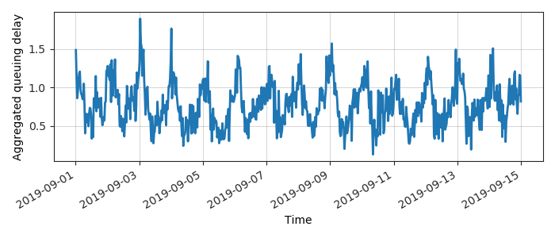
Periodogram
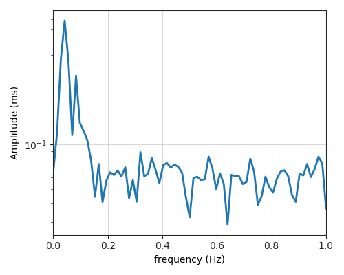
24H profile

Probes' last-mile RTT
- 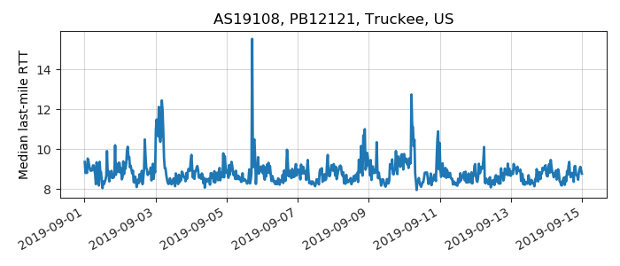
- 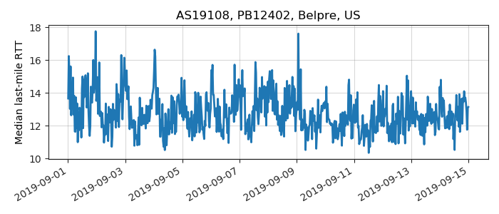
- 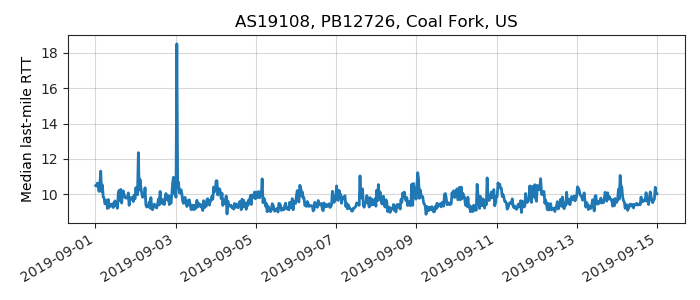
- 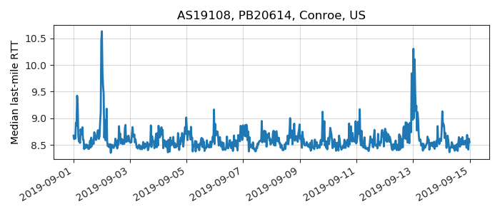
- 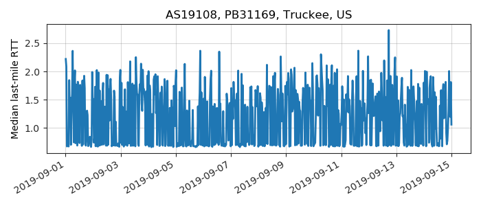
- 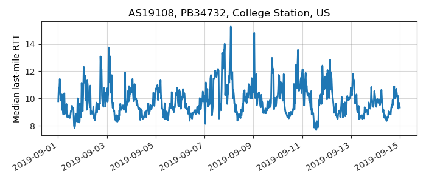
- 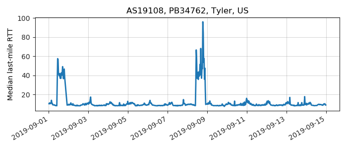
- 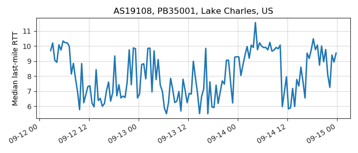
- 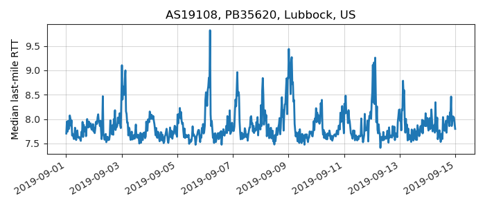
- 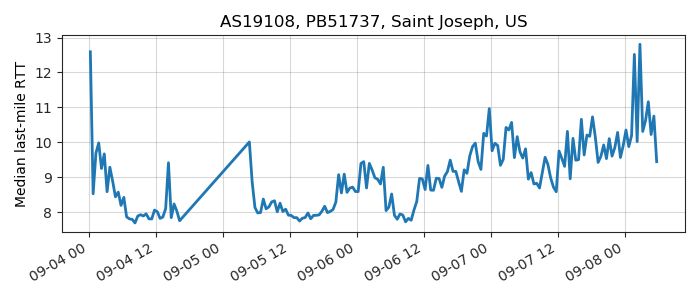
- 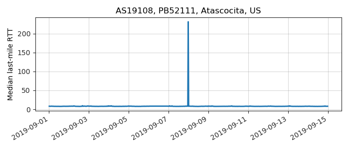
- 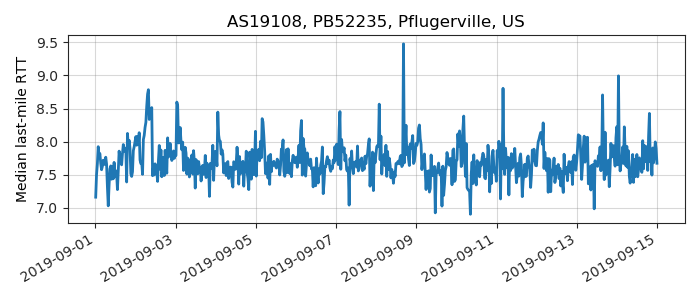